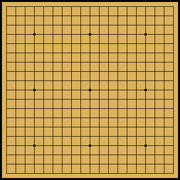
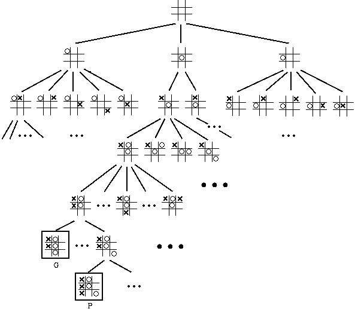
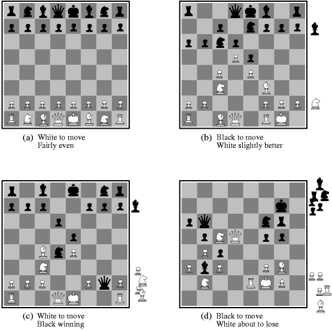
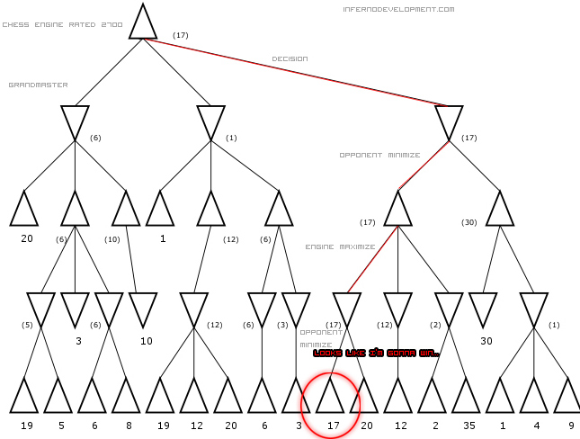

Talk Plan
- AI, Machine Learning, Data Science
- Why AlphaGo?
- Game of Go, How Computers Play Games
- AlphaGo
- Monte Carlo Tree Search
- Reinforcement Learning
- Deep Learning
AI in Business. Transportation
AI in Business. Health Care.
AI in Business. Across sectors & Global.
What About Data Science? DIKW Pyramid.
What About Data Science? Interdisciplinary.
Data Science is actually about Data Scientist.
Data Science is actually about Data Scientist.
How can I become a data scientist?
- Learn statistics well
- Learn Python and/or R
- Learn Machine Learning Algorithms
- MOOCs, Datacamp
- Hone your skills. Kaggle etc., Senior Design Project? Graduate Programs (MS, Phd)
- Google it. A good page.
Talk Plan
- AI, Machine Learning, Data Science<
- Why AlphaGo?
- Game of Go, How Computers Play Games
- AlphaGo
- Monte Carlo Tree Search
- Reinforcement Learning
- Deep Learning
Talk Plan
- AI, Machine Learning, Data Science<
- Why AlphaGo?
- Game of Go, How Computers Play Games?
- AlphaGo
- Monte Carlo Tree Search
- Reinforcement Learning
- Deep Learning
Go
- China (4th century BC, war, art), Korea (5th-7th cent.), Japan (7th cent., Go Houses), West (1900's)
- Turkey (90's, Alpar Kılınç, Şibumi/Trevanian, Türkiye
Go Oyuncuları Derneği)
- Strong Philosophy, Insights, Simple Rules, Visual Intuition
- Player rankings (30k → 1k → 1d → 9d → 1p → 9p)
- How can I learn?: Web, Problems, Books, Go Servers (IGS, KGS, Clients)
Go Basic Rules

- Chess like mechanics: 2-person, black&white equal pieces, played into grid intersections
- Rule 1 (liberty): Each stone (stone group) needs empty neighbors to breathe, otherwise they die (captured).
- Rule 2 (ko): Board state can't repeat.
- All other concepts derive from these.
- Scoring: Area surrounded + captured stones + handicap
Go Wisdom
- Give your opponent what he wants.
- He who rides on a tiger can never get off.
- A rich man should not pick quarrels.
- Greed for the win takes the win away.
- Don't try to win. Try not to lose.
- You can play Go but don't let Go play you.
- Never wrestle with a pig.
- Make a fist before striking.
- Play urgent moves before big moves.
- Make a feint to the East while attacking in the West.
- Play fast, die fast. Play slow, die slow.
AI Early History
- 1950 - Turing Test
- 1950 - Claude Shannon: Analysis of Chess as a Search Problem
- 1951 - Checker and Chess Programs
- 1956 - Dartmouth College summer AI conference
- 1959 - MIT AI Lab
- 1961 - Symbolic Computing, Calculus Problems
- 1965 - ELIZA, First chat bot
- 1966 - Machine Translation mission impossible.
Natural Language Processing to sleep.
- 1969 - Minsky & Pappert, Perceptrons,
but soon after Neural Networks to sleep
- First Winter of AI
AI Recent History
- 1980s - Expert Systems, Commercialization
- 1986 - Neural Networks awakens. Backpropogation (1974)
- 1991 - Dart, 1991 First Gulf War
- 1994 - Chinook, English Checker Champion
- 1995 - No Hands Across America, 4500km, no gas/accelaration
- 1997 - Deep Blue beats Kasparov.
- 1997 - Othello (Reversi) World Champion
- 1998 - Furby, robotlar at home
- 1998 - TD-Gammon, Bakcgammon WC, Reinforcement Learning
- 2009 - Self Driving Car, Google
- 2011 - IBM Watson, Jeopardy World Champion
- 2013 - HRP2 (Japana/Google), drive a vehicle, walk over debris, climb a ladder, remove debris, walk through doors, cut through a wall, close valves and connect a hose
- 2016 - AlphaGo
Game Playing AI
- Test ground for AI methods, Challenging, Fun
- Formally defined rules, Many possibilities (search space)
- Uncertainties (opponent, luck), time constraints, partial information
- Solved: Chinook (1994), Chess (Deep Blue-Kasparov 1997, Deep Fritz-Kramnik 2006), Othello (1997), Scrabble (Maven, 1998), Backgammon (TD-Gammon, 1998)
- New Goals:
Poker, Go, Boards Games (Settlers of Catan), MMORPG, General Game Playing
Game Trees

How Big: Table
Exponential Growth
| Complexity Class |
N = 10 |
N = 100 |
N = 1,000 |
... |
N = 1,000,000 |
| O(1) |
1x10-7
seconds |
1x10-7
seconds |
1x10-7
seconds |
... |
1x10-7
seconds |
| O(log2N) |
3.3x10-7
seconds |
6.6x10-7
seconds |
10x10-7
seconds |
... |
20x10-7
seconds |
| O(N) |
1x10-7
seconds |
1x10-6
seconds |
1x10-5
seconds |
... |
1x10-3
seconds |
| O(N2) |
1x10-6
seconds |
1x10-4
seconds |
1x10-2
seconds |
... |
2.7
hours |
| O(N3) |
1x10-5
seconds |
1x10-2
seconds |
10
seconds |
... |
3x103
years |
| O(2N) |
1x10-5
seconds |
4x1021
centuries |
forgetaboutit |
... |
forgetaboutit |
Evaluation Function

f(P) = 200(K-K') + 9(Q-Q') + 5(R-R') + 3(B-B'+N-N') + (P-P') - 0.5(D-D'+S-S'+I-I') + 0.1(M-M') + ...- K, Q, R, B, N, P are the number of white kings, queens, rooks, bishops, knights and pawns on the board.
- D, S, I are doubled, backward and isolated white pawns.
- M represents white mobility (measured, say, as the number of legal moves available to White)
Partial Search (Minimax, Alfa-Beta pruning)

Talk Plan
- AI, Machine Learning, Data Science<
- Why AlphaGo?
- Game of Go, How Computers Play Games
- AlphaGo
- Monte Carlo Tree Search
- Reinforcement Learning
- Deep Learning
AlphaGo Architecture (DL and RL)
slides
{kind=link}